Components
Several page-specific components are included in the template. Many are required as part of specific page layouts while others are optional and may be included as part of any internal page. While the top Introduction Block should have a white background, it is recommended to differentiate the background colors of the other sections to aid the user visually as they scan a page.
DCCPS
Header
The DCCPS Header includes the logo and a search bar for an internal site search. The Header and Top Navigation must be consistent from page to page and are included in the page template.
••• Show Code Snippet
Top Navigation
The Top Navigation is accessible on every page in the site. A horizontal bar, home should be listed to the far left and About to the far right. If the top menu item has sub items, a down arrow should be used to indicate a submenu. The relative top menu item should be highlighted in the top navigation whenever it is selected or a submenu item is selected. Each section is assigned a color which is displayed in the thick border beneath the navigation bar.
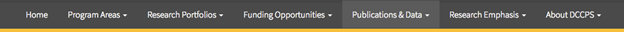
••• Show Code Snippet
Hero
The Hero section is exclusive to the homepage and features a short mission statement to introduce users to DCCPS. The background photo rotates upon refresh.
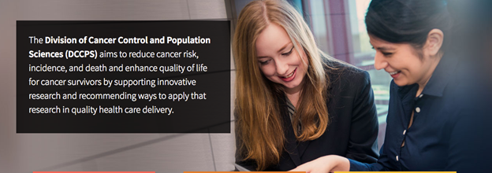
••• Show Code Snippet
“In the Spotlight” Cards
The “In the Spotlight” cards are designed to highlight featured content.
Content Guide
Title: 2-3 words
Copy: 1 short sentence using active voice and plain language.
Links: Should support card topic.
Usage: DCCPS Homepage
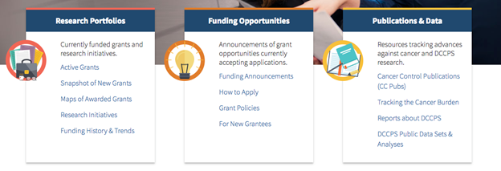
••• Show Code Snippet
“What’s New” Section Cards
The “What’s New” boxes on the home page are designed to showcase new research, content such as newsletters, or programs that DCCPS would like to highlight for website visitors. The goal is to keep the content fresh and update it regularly. Below are some general guidelines to follow when developing content for the “What’s New” boxes:
- There should be no more than eight content boxes at one time. There must be a minimum of six boxes at all times.
- Content should be removed if it is more than two months old; however, if no new content is available, consider rotating in old content if it is relevant.
- If possible, content should be updated weekly, or quarterly.
- Each box should contain a title, body copy, and date.
Content Guide
Title: Three to five words – concise name of the highlighted content
Copy: 25 words – brief description of the highlighted content
Date: Month Year
Usage: DCCPS Homepage
Example One:
Title: Cancer Trends Progress Report
Copy: This report summarizes our nation’s advances against cancer in relation to the Department of Health and Human Services’ Healthy People targets.
Date: January 2017
Example Two:
Title: Cancer Control Publications (CC Pubs)
Copy: A searchable database that highlights citations from research conducted by DCCPS staff, grantees, and contract investigators since 1998.
Date: January 2017
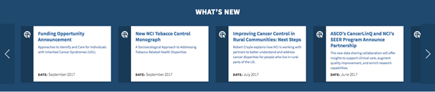
••• Show Code Snippet
Featured Video/Featured Infographic
The Featured Video/Featured Infographic section highlights timely and relevant media from across the program areas. It is recommended to update on a monthly to quarterly basis.
Content Guide
Title: Use active voice that encourages user to view media.
Usage: DCCPS Homepage
Example: “NCI’s Cancer Prevention Fellowship Program is Using Team Science to Grow Research and Leadership”
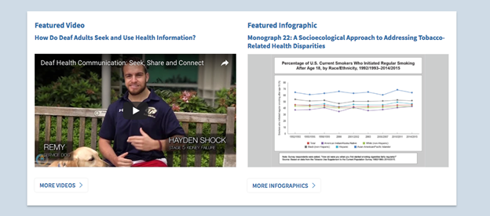
••• Show Code Snippet
About DCCPS
The “About DCCPS” block summarizes what DCCPS is about.
Content Guide
Copy: No more than a few sentences.
Include high-level content that highlights what DCCPS does and entices user to learn more.
Recommended to review annually.
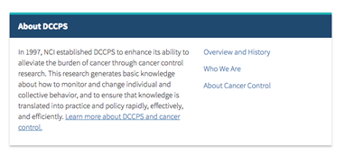
••• Show Code Snippet
Research Emphasis
The “Research Emphasis” block highlights priority content.
Content Guide
Copy: No more than a few sentences.
Include content that highlights Research Emphasis and entices user to learn more. Could also promote one timely item related to Research Emphasis.
Recommended to review annually.
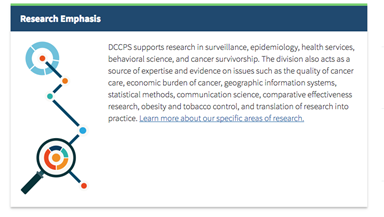
••• Show Code Snippet
Tweets
The Twitter feed displays recent tweets by the @NCICancerCtrl handle.
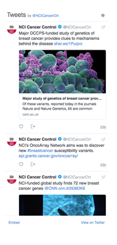
••• Show Code Snippet
Program Areas
The Program Areas section provides contextual links to all the DCCPS supported program areas. Each card represents a program area and includes a teaser and link.
Content Guide
Title: The program area topic
Description: A short sentence describing the program area and uses active user-friendly language.
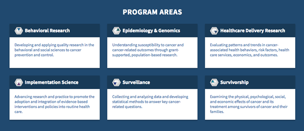
••• Show Code Snippet
Footer
The Footer must be consistent across all pages on the site. The far left column features Twitter and a banner for LiveHelp. The footer also contains a list of menu items (the same as the top navigation), a utility menu, and links to partner sites. Spanning the bottom, the NIH tagline is featured and a “Last Updated” item with a date. Lastly, there is a scroll-to-top button that is fixed at the bottom of the screen.
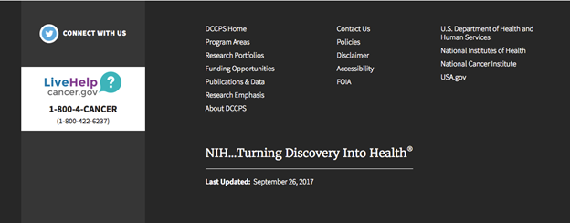
••• Show Code Snippet
Program Areas
Header
The program area Header includes the NIH/DCCPS logo and a search bar for an internal site search. The Header and Top Navigation must be consistent from page to page and are included in the page template. To differentiate the program area from the parent site, a program area branding bar is displayed at the bottom of the Header.
••• Show Code Snippet
Top Navigation
The Top Navigation is accessible on every page in the site. A horizontal bar, Home should be listed to the far left and About to the far right. If the top menu item has sub items, a down arrow should be used to indicate a submenu. The relative top menu item should be highlighted in the Top Navigation whenever it is selected or a submenu item is selected.
••• Show Code Snippet
Hero
The Hero section is exclusive to the program area homepage and features a short mission statement to introduce users to the purpose of the program. The background photo rotates upon refresh.
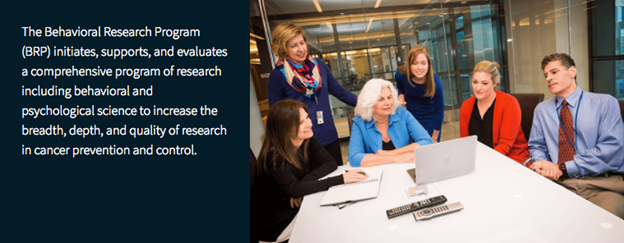
••• Show Code Snippet
Explore
The Explore section is exclusive to the program area homepage. It contains six cards with icons, titles, and teaser text. Each card should feature a priority item so that users can access top content quickly.
Content Guide
Title: 2-3 words
Copy: Short teaser no more than 25 words
Icon: Should be related to the topic
Usage: Program Area homepage
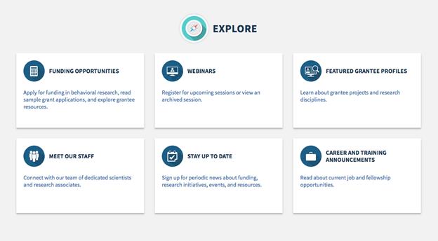
••• Show Code Snippet
About (Program Area)
The About (Program Area) block summarizes what the program area is about. The title of the section features an icon specific to the program area. A featured video or photo is optional. An optional Quick Links/Branches block may be included and should feature items relevant to what the program is about.
Content Guide
Copy: A short paragraph.
Usage: Program Area homepage
Include high-level content that highlights what DCCPS does and entices user to learn more.
Recommended to review annually.
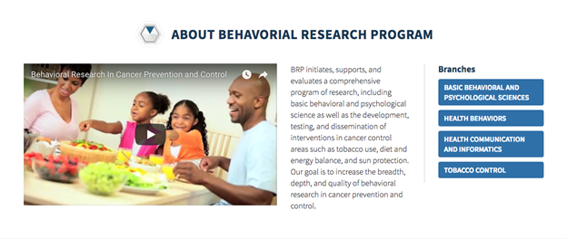
••• Show Code Snippet
“In the Spotlight”
“In the Spotlight” is designed to feature timely, relevant information. Each card contains a title and teaser text.
Content Guide
Title: 2-4 words
Copy: Short teaser no more than 50 words
Usage: Program Area homepage
Recommended to review on a quarterly basis.
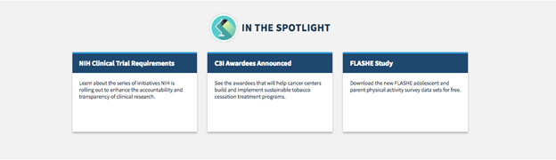
••• Show Code Snippet
Connect with Us
The Connect with Us section groups ways the user can be connected to the program area.
Content Guide
Usage: Program area homepage; the short form may also be featured on the news subpage.
Subscribe for Updates
The subscription block features a short form for the user to subscribe to the e-newsletter and a link to the latest. This short form may be featured on the news subpage.
The block also features a link to Twitter along the bottom.
Tweets
The Twitter feed dynamically displays the latest tweets by the appropriate handle.
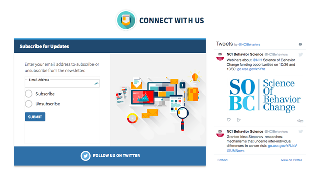
••• Show Code Snippet
Sample Applications
The Sample Applications section uses a gridded card interface to feature successful sample applications.
Each card contains:
- Grant Title
- Principal Investigator (photo, name (linked to bio page), credentials, organization)
- Grant Mechanism & Award Number
- Two CTAs: “View Abstract” and “View Grant Application”
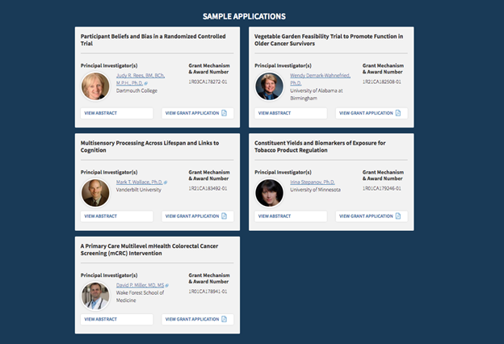
••• Show Code Snippet
Footer
The Footer must be consistent across all pages on the site. The program area Footer includes a “Last Updated” section at the top. The main area of the Footer is comprised of four columns. The first is dedicated to the program area main navigation. The items in this navigation list should mirror the top-level pages in the Top Navigation. The second column is the top-level landing pages from the DCCPS parent site. The third column is a cancer.gov utilitarian menu. The last column includes links to partner sites. The last section of the Footer spans the bottom and includes a LiveHelp banner and NIH tagline. Lastly, there is a scroll-to-top button that is fixed at the bottom of the screen.